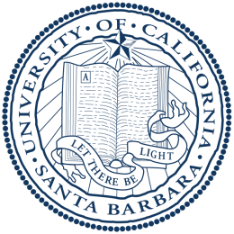

Hi, I am Yu Zeng, a 5th-year PhD student in the ECE department at Princeton, advised by Prof. Sharad Malik. I also work closely with Prof. Aarti Gupta. My current resarch is about the automatic generation of ISA models for heterogeneous hardware (processors and accelerators) from their RTL designs, and automating software development with hardware models, especially with program synthesis approach. During my research, I mainly utilize SMT-based tools (Rosette, JasperGold, Z3) and data-flow analysis algorithms (with LLVM).
Recent news: (click here for full news history)Experience
 Research Assistant - 2018-2023
Research Assistant - 2018-2023
Electrical and Computer Engineering, Princeton University

Visiting Scholar - Summer 2022
Prof. Yu Feng's Group, UCSB CS Department
 Research Assistant - 2015-2018
Research Assistant - 2015-2018
Michigan Integrated Circuits Lab, University of Michigan, Ann Arbir
Education
Ph.D., Electrical and Computer Engineering (2018-2023)
Princeton University, Princeton
Advisor: Professor Sharad Malik
M.S., Electrical and Computer Engineering (2015-2018)
University of Michigan, Ann Arbir
Advisor: Professor David Blaauw
B.Sc., Microelectronics (2011-2015)
Fudan University, Shanghai
Publications [Scholar]
-
Automatic Generation of Architecture-level Models from RTL Designs for Processors and Accelerators.
Yu Zeng, Aarti Gupta, and Sharad Malik
2022 Exhibition on Design, Automation and Test in Europe (DATE '22) -
Architecture-Level Abstractions from RTL Designs for Processors and Accelerators Part I: Determining Architectural State Variables.
Yu Zeng, Bo-Yuan Huang, Hongce Zhang, Aarti Gupta and Sharad Malik
2021 IEEE/ACM International Conference On Computer Aided Design (ICCAD '21)
-
Scalable Mutual Information Estimation Using Dependence Graphs
Morteza Noshad, Yu Zeng and Alfred O. Hero
2019 IEEE International Conference on Acoustics, Speech and Signal Processing (ICASSP '19)
-
GenAx: a Genome Sequencing Accelerator
Daichi Fujiki, Aran Subramaniyan, Tianjun Zhang, Yu Zeng, Reetuparna Das, David Blaauw, and Satish Narayanasamy
2018 45th Annual International Symposium on Computer Architecture (ISCA '18) -
A 1.7nW PLL-assisted Current Injected 32KHz Crystal Oscillator for IoT
Yu Zeng, Taekwang Jang, Qing Dong, Mehdi Saligane, Dennis Sylvester and David Blaauw
2017 Symposium on VLSI Circuits (VLSI '17) -
A Database-Driven Ant Colony Algorithm for PLC Networking
Yu Zeng, Xiaofang Zhou, Linshan Zhang, Nianrong Zhou, Greld E. Sobelman
IEICE Electronics Express. 2014 Vol. 11 No. 22
Teaching
- Fall '21: ECE 206 - Contemporary Logic Design, Princeton
- Fall '19: ECE 206 - Contemporary Logic Design, Princeton
- Spring '18: EECS 427 VLSI Design I, University of Michigan - Ann Arbor